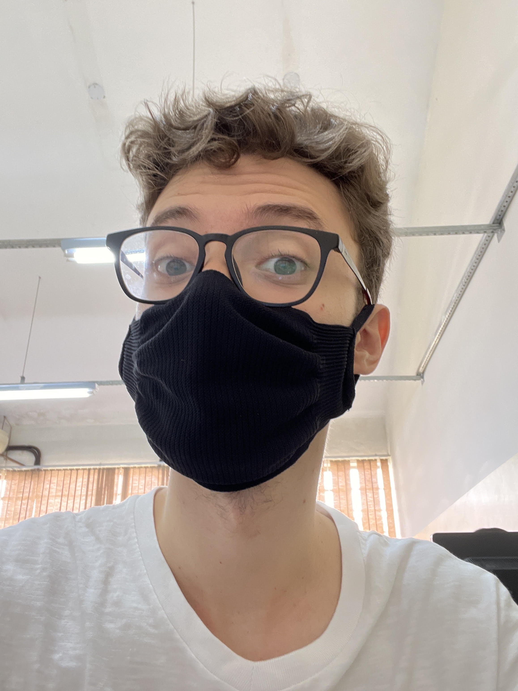

| Stefano Fogaccia
Brasileiro, 21 Anos Araraquara - São Paulo (16) 91234-5678 s.fogaccia@aluno.ifsp.edu.br Endereço: Rua dos Bobos, Nº 0 Github: doc0185 Linkedin: stefano-fogaccia |
 |
|---|
Tecnologias: Pacote Office (Intermediário), Linguagem C (Intermediário),
Java (Intermediário), Javascrypt (Iniciante),
HTML5 (Iniciante), CSS3 (Iniciante), Python (Iniciante)
Em 2021, entre no curso de Análise e Desenvolvimento de Sistemas no IFSP de Araraquara
Desde 2022, trabalho na Unesp, campus Farmácia Araraquara, como estagiário na Diretoria Técnica de Informática.
Lá, desenvolvo bastante minhas habilidades de informática, seja no meio de hardware ou de software, além de
também desenvolver minhas habilidades sociais, quando ajudo os doscentes e discentes da universidade.
Essas que sempre podem receber certas melhorias...
Uma profissão dos Sonhos pra mim seria algo que envolvesse as minhas habilidades técnicas, de programação por exemplo
além de também envolver habilidades audiovisuais, como trabalhar em mídias sociais, Youtube, etc.